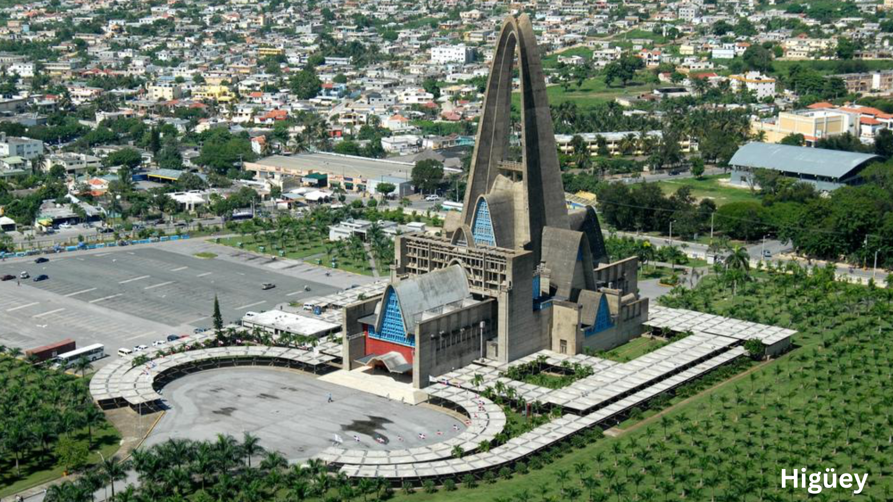

La Romana es una provincia ubicada en la costa este de la República Dominicana. La ciudad de La Romana es su municipio cabecera y se destaca como un importante centro turístico y económico en el país.La zona cuenta como con Casa de Campo y etc...
|
Santa Cruz de El Seibo , también conocida simplemente como El Seibo, es la ciudad cabecera de la provincia de El Seibo en la República Dominicana. Se encuentra en la región este del país.El Seibo es conocido por su rica historia y su importancia cultural.
|

Higüey es la ciudad cabecera de la provincia de La Altagracia en la República Dominicana. Conocida como un importante destino turístico, Higüey alberga la Basílica de Nuestra Señora de la Altagracia, considerada el principal santuario católico del país.
|